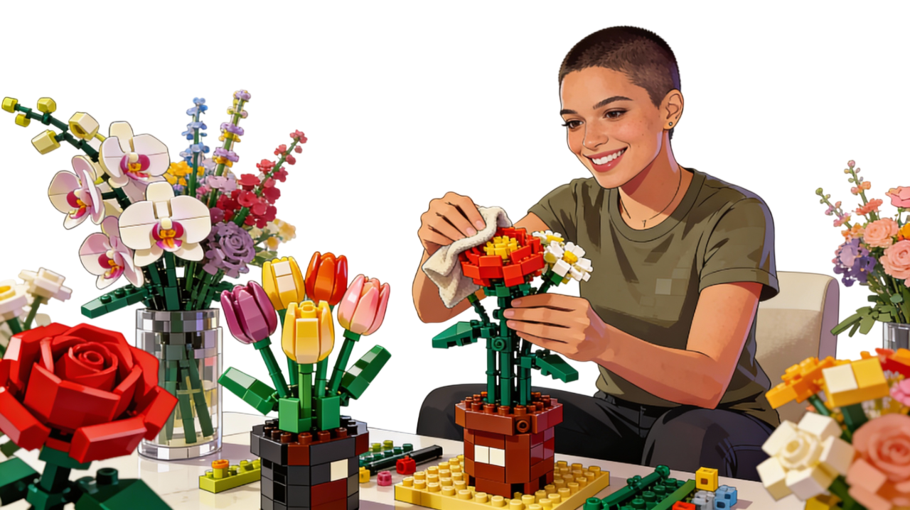
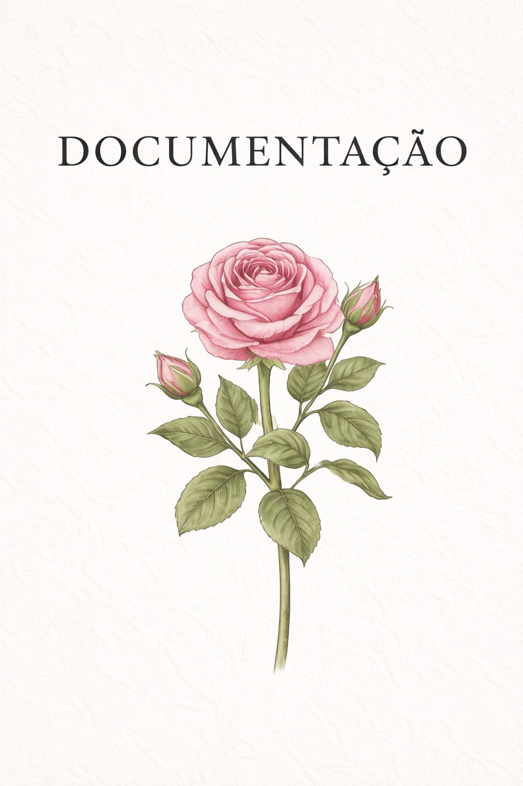
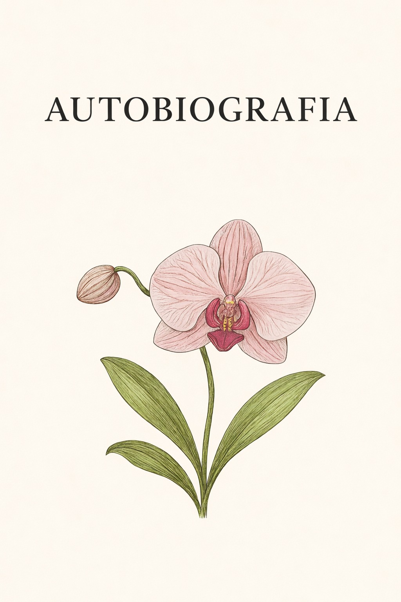
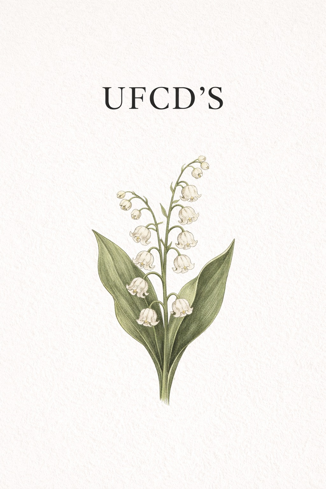
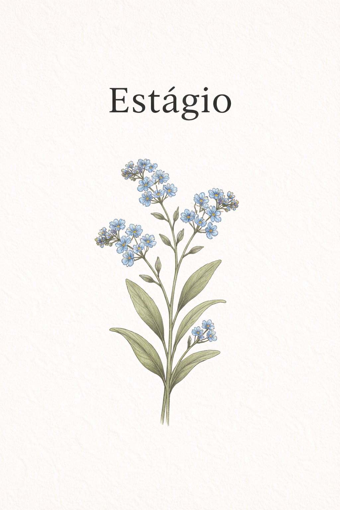
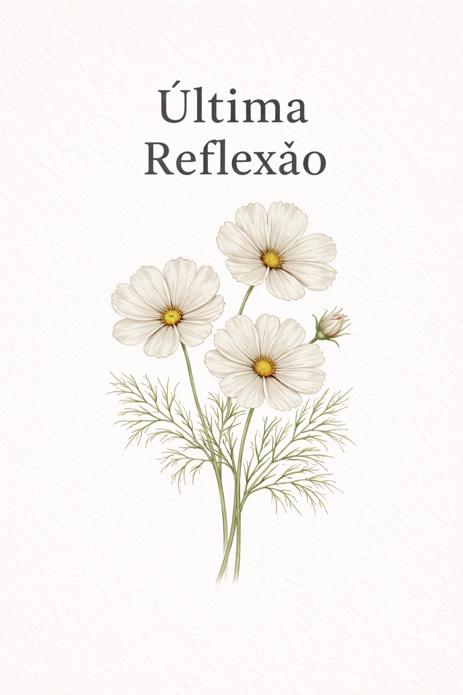
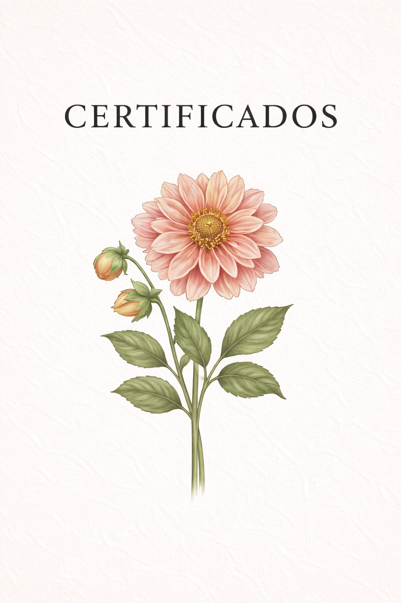

Obrigado por explorares este currículo. Aqui encontras um resumo rápido do conteúdo disponível.
Índice rápido:
Espaço para listagem das referências bibliográficas usadas nos conteúdos deste portefólio.






